Key
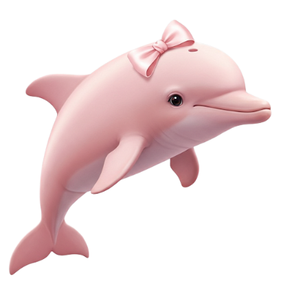
Amazon River Dolphin

Roseate Spoonbill

Zebra
Amazon River Dolphin
Roseate Spoonbill
Zebra
Roseate Spoonbills are usually found in the Southeastern coast of the US and around Central to South America. Most spoonbills migrate short distances often due to changes in food and water levels. They are pale, pink birds and the end of their bill flattens into a spoon-like shape, hence the name spoonbill.
Challenges faced during migration: Habitat loss, climate change, and predators
Fun Fact: This picture was taken by our very own Coach Tania right infront of her house, at Lake Lynn, Raleigh NC!
The Mayan Cichlid is an invasive species that disrupts the balance of the ecosystem that spoonbills migrate to and from. They consume most of the resources in the rivers, and often compete with the spoonbill for food.
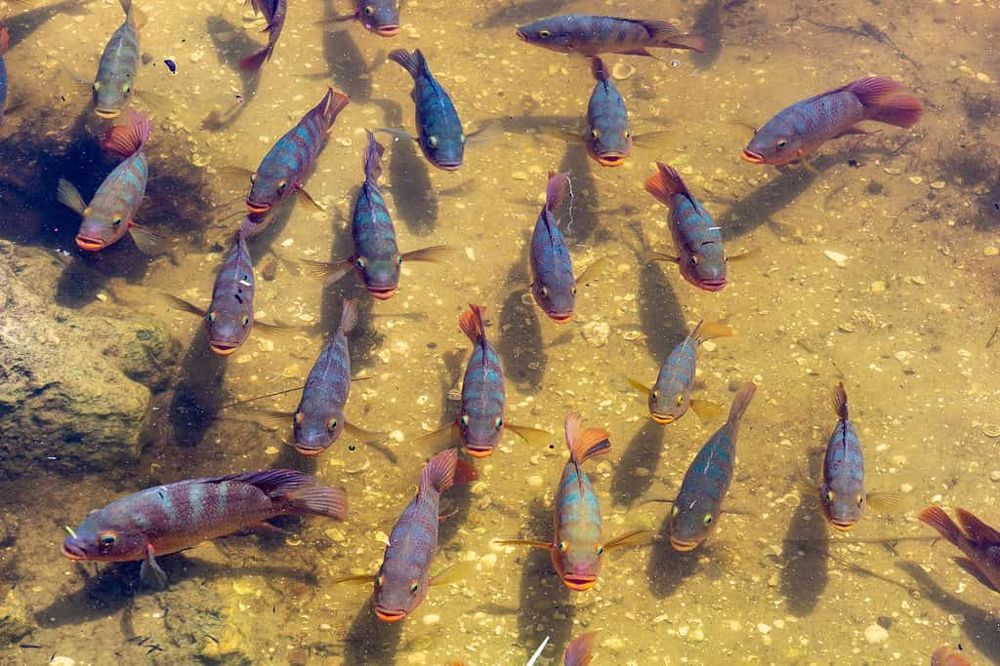They are known to travel in groups, which is why they cause so much trouble for the birds.
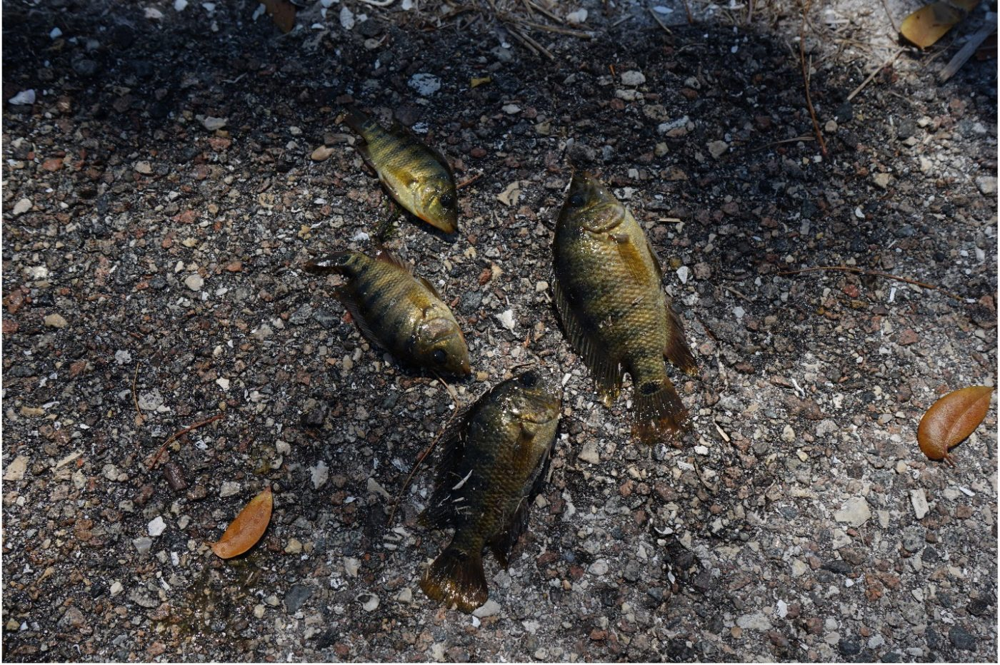
It's pronounced "sick-lid" for those of you who didn't know ;)
Human conservation greatly helps maintain the wetlands and habitats of the roseate spoonbills. These areas provide food resources and shelter for the animals, which is crucial for their migration.
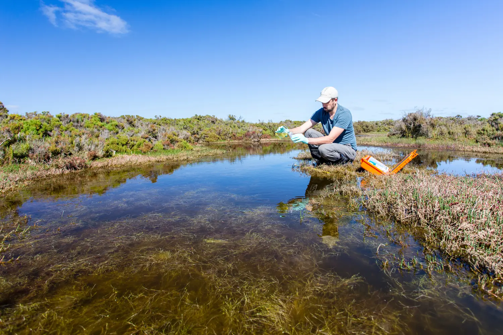Human activites that restore and protect the wetlands ensure that the birds' habitats have resources no matter where they are.
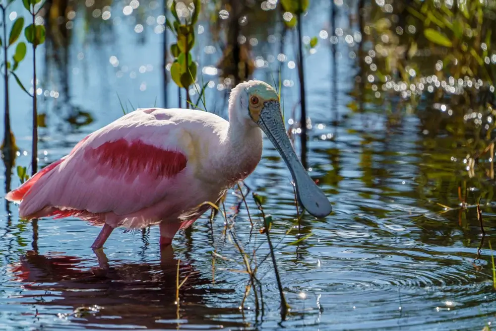
Fun Fact: The roseate spoonbill gets its pink color from its food, just like flamingos. Along the wetlands that it migrates across, it feeds on shrimp and other rich crustaceans that contain a pink pigment which slowly builds up in the bird's feathers!
During the dry season, the Amazon River dolphins occupy the main river channels in the Amazon. During the rainy season, they migrate to smaller tributaries in the forest and floodplains.
Challenges faced during migration: Habitat loss, pollution/litter in the ocean, entanglement in fishing gear, and human activities
Fun Fact: Some of the fish species that are commonly consumed by pink river dolphins include piranhas (yikes!), catfish, characins, and tetras.
When the pink dolphin is migrating through the amazon rivers, they often encounter lots of pollution such as plastic bottles, waste water, sewage, and etc. If the pollution gets into their system, they often face struggles with breathing, harm to their immune system, and disruptions in their population and environment.
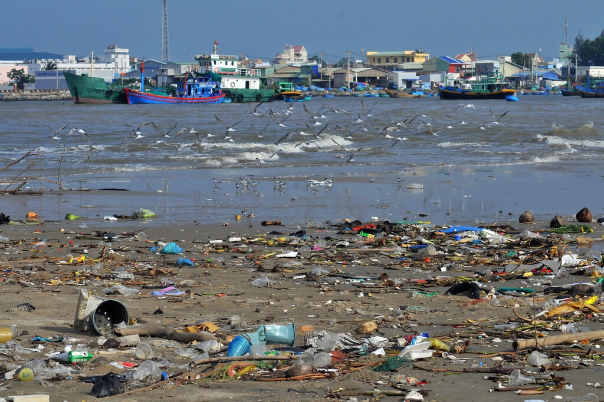It also greatly increases the risk of diseases such as cancer.
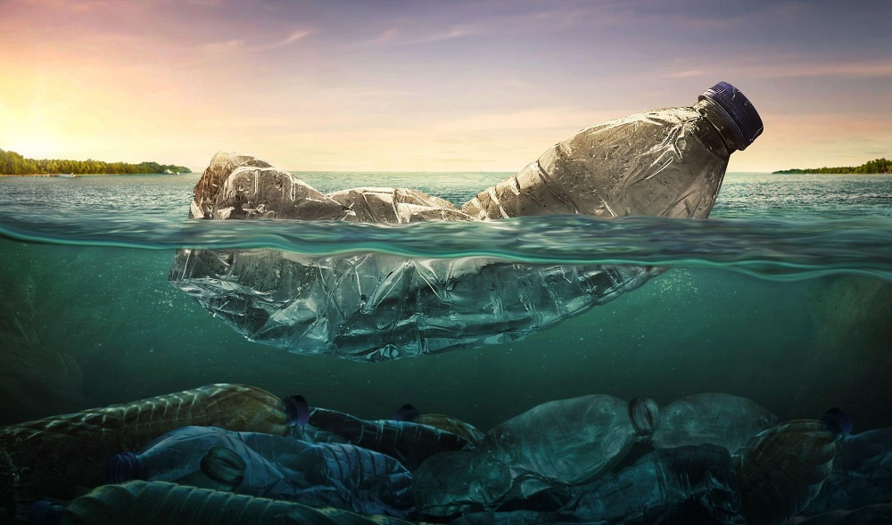Save the turtles! Sksksksksksk...
Establishing sustainable fishing practices help amazon river dolphins immensely. Bycatch causes many dolphins and other marine animals to be caught and entangled in fishing nets. Overfishing also leads to a decrease in the amount of prey dolphins have.
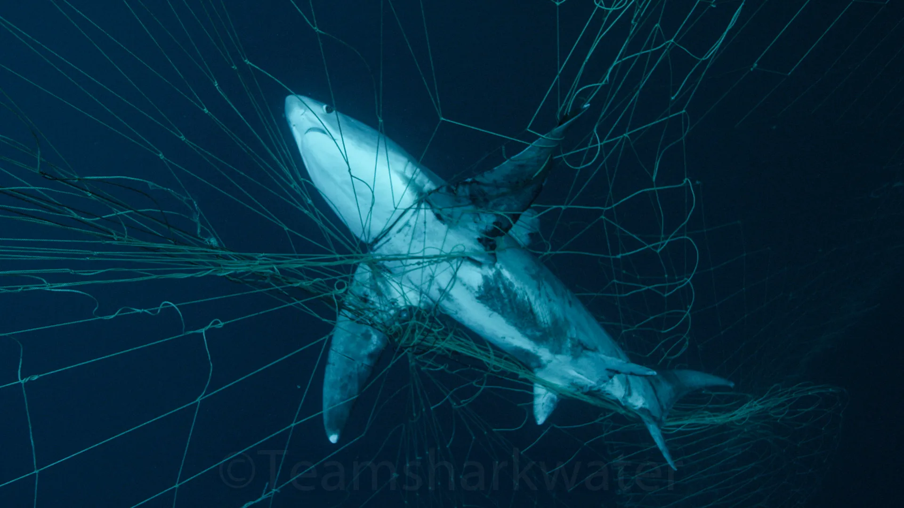Sustainable practices used by fisherman help reduce injuries to the dolphins and other life there. Humans can work to ensure these practices are implemented and the river stays safe.
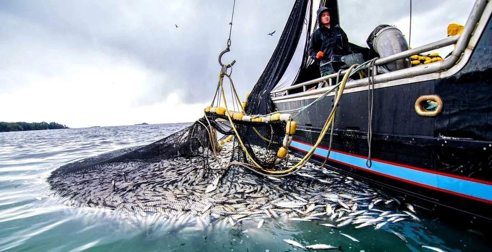
Fun Fact: If fisheries were managed sustainably, they could produce an extra 16 million tonnes of seafood every year!
Zebras migrate to Botswana, the Makgadikgadi, and the Serengeti National Park. They travel in the rainy seasons and go around 2,900 miles, occupying many geographical areas.
Zebras face many challenges on their journey of migration:
1. Predators:
- Hyenas
- Cheetahs + Leopards
- Crocodiles
2. Lack of water
3.
Navigating obstacles such as human activities
Fun Fact: Zebras' stripes create tiny air currents that help cool them down, like natural air-conditioning!
When Zebra's migrate to Botswana, they encounter the "King of the Safari", the Lion. The average Lion kills about 62 zebras per year. Espcally during Zebra migration, they are under threat of the lion.
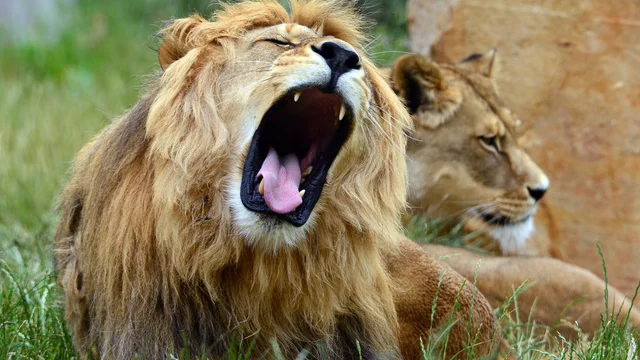Zebras must always stay silent, as lions often rely on teamwork and stealth to hunt. Although zebras are fast runners, they must stay alert, as they are vulnerable towards the lions. Under the constant presence of lions, zebras must stay cautious, as lions are usually their biggest challenge.
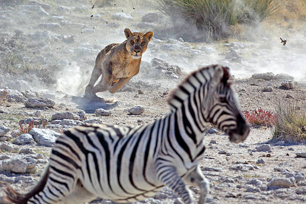Simba is the Swahili word for lion. It means "king" :)
Grass acts as a very reliable resource for zebras. It is their primary food source and the grass they graze on is the main drive for their migration. Zebras have been known to migrate to areas with recent rainfall. The rainfall causes an abundance in food and grass growth.
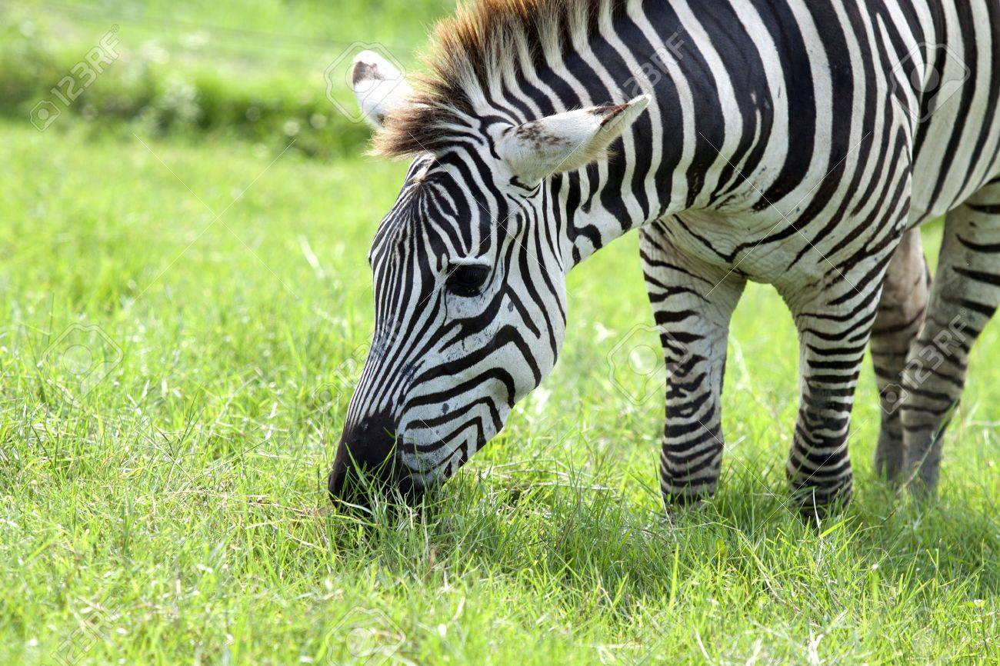They are always looking for more grass, and traveling wherever they can find it.
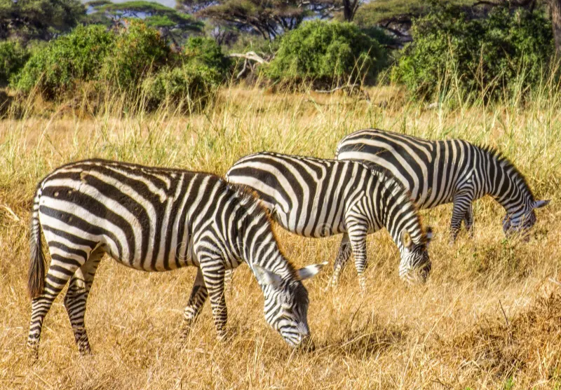
Fun Fact: Zebras will travel over 10,000 kilometers in search of fertile grassland!